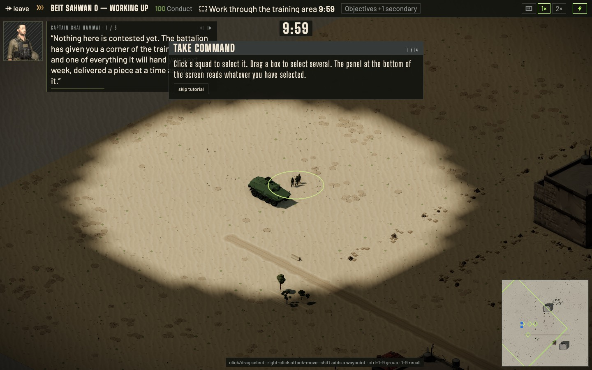
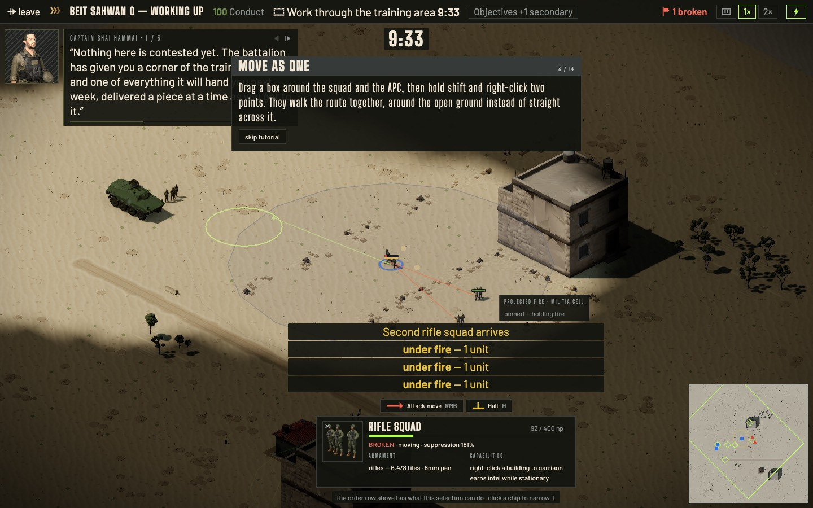
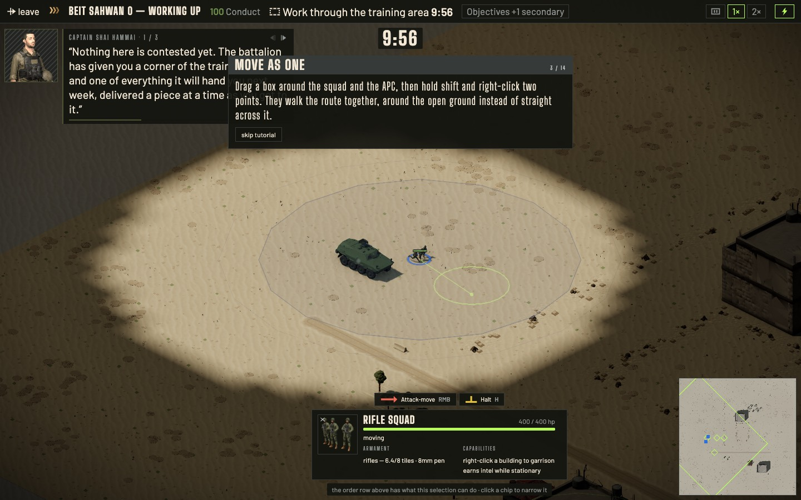
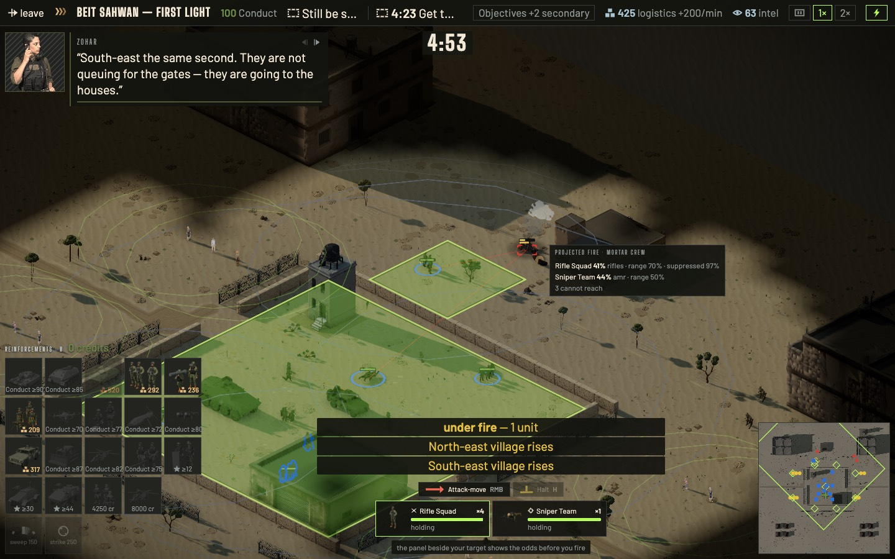
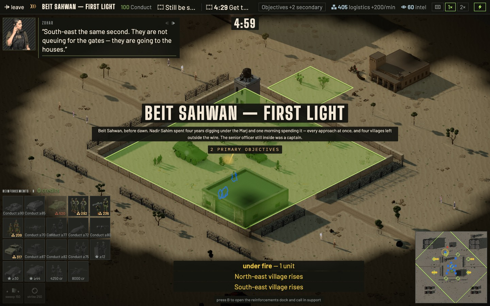

First session: tutorial strip, fire panel, Conduct invoice
GH-345 mock. Left: what a new player sees on main today. Right: the same frame under the spec. Hatched boxes are HUD elements the spec keeps hidden at that beat, labelled with the beat that reveals them. Nothing here is built.
Beat 1: look around (was "Take command")

Before, 9:59. Step 1/14 already asks for a selection. The step panel covers the radio's own briefing text, and the strip shows Conduct, the objective, a 10:00 clock, objectives, speed and mute. Seven things on screen before the first click.
Conduct, objective, Objectives: beat 8/9
speed, mute: never in tutorial
clock
hint: beat 3
1 / 9Look aroundThis is the training ground. Move the view with WASD or the arrow keys, or click the small map in the corner.
minimap revealed at beat 1radio slot holds the lesson; radio itself hidden
After. The world, the leave button and the mission name, the minimap, and one lesson in the radio's slot (which also ends the overlap). Done when the camera has moved 6 tiles from the start.
Beat 2: take command
Before, beat 2/14 "Move by bounds". The card is fine. The order row offers Attack-move (RMB) and Halt, and the lesson says "right-click to send them", but nothing says right-click IS attack-move.
beat 8/9
never
clock
order row: beat 3
hint: beat 3
2 / 9Take commandClick the rifle squad. The card at the bottom says what you have selected and what it carries.
card revealed at beat 2
After. One new element, the card, and it appears only when the player has selected something. Done on intent select.
Beat 3: advance

Before, 9:33. A right-click toward the wall (beat 2) put the squad in range of the two militia cells that hold the courtyard from t=0. It was BROKEN at 92/400 hp while the panel still taught beat 3, "Move as one". Three "under fire" notices and the projected-fire panel showing "pinned, holding fire" were the first combat a new player saw.

beat 8/9
never
clock
3 / 9AdvanceRight-click the marked ground. Your men go there and fight whatever they meet on the way. H halts them.
order row revealedcontrols hint revealedno hostile spawned yet: the courtyard is empty until beat 4
After. The order row and hint arrive with the verb they describe. Nobody hostile exists until beat 4 spawns them by trigger, so beat 3 cannot be lost.
Beat 5: read the fire panel, then shoot
Today the panel exists but nothing teaches it, and two of its strings explain nothing. Below: the shipped strings as captured, then the proposed states. Each "after" panel is what the player is asked to hover in beat 5.

Before, First Light at 4:53. "Rifle Squad 41% rifles · range 70% · suppressed 97%". Each factor is printed as a MULTIPLIER, so "suppressed 97%" means almost no penalty but reads as almost total. The more common state measured in a scripted hover sweep was a bare "no unit can engage", with no reason.
Shipped · Projected fire · Militia Cell
contact not identified — no firing solutionSays the problem, not the remedy.
Shipped · Projected fire · Militia Cell
no unit can engageOut of range? No line of sight? It does not say which.
Shipped · Projected fire · Militia Cell
Rifle Squad 1%rifles · cover 14% · range 25%Measured First Light 0:28. "cover 14%" is the multiplier 0.14.
A · not identified
Projected fire · Militia Cell
Not identified · no firing solutionKeep eyes on it: stay still in sight of it, or get closer. Nobody fires at a contact they have not identified.
B · in cover
Projected fire · Militia Cell
Rifle Squad 9%rifles in heavy cover−86%Cover is the ground they stand on. Flank it, or pin it and move.
C · moving
Projected fire · Militia Cell
Rifle Squad 38%rifles target moving−40%It is hard to hit something running. Wait for it to stop.
D · out of reach
Projected fire · Militia Cell
Out of range or out of sight· rifles reach 8 tilesReplaces "no unit can engage". The reach is read from unit data, no sim change.
E · cannot penetrate (not stageable)
Projected fire · —
No enemy unit in data/units/enemy has side armour above 15, and the lightest KDF weapon has 8 mm penetration against a threshold of side armour ÷ 4. This state is unreachable against any shipped enemy.The beat teaches A–D. E waits for an armoured enemy unit.
The percentages in B and C are illustrative. The real numbers come from sim.projectHit as today; only the wording changes, from the multiplier to the penalty (1 − multiplier).
The Conduct invoice
The deductions are already collected in main.ts and printed one per line in the debrief, as raw sim reasons. The invoice groups them by cause, names the place, and shows the same ledger in four places.
1 · Feed, at the moment it happens
Clinic struck −5 · Conduct 95
Was: "Conduct −5 (fire into protected structure (z_clinic)) → 95". That is the sim's English reason with the zone id in it.
2 · Strip, on hover or click of Conduct
Conduct 85 · floor 70
Clinic struck ×2
0:41
−10
Heavy fire near civilians
1:12
−3
House destroyed
1:30
−2
Replaces the definition-only tooltip. The definition becomes the empty-state line.
3 · End screen
Withdraw and regroup · defeat
Conduct 85 · Clinic struck ×2 −10 · +1 more
Was: "Conduct 100 · 9 units walking out". It keeps the worst line and counts the rest.
4 · Debrief
Conduct · 85 of 100 · floor 70
Cause
When
Cost
Clinic struck ×2
0:41, 0:52
−10
Heavy fire near civilians
1:12
−3
House destroyed
1:30
−2
First Light at t = 0, for scale

Before, 4:59. The dock is open with 21 tiles, 15 of them locked behind Conduct, stars or credits, two countdowns in the strip (4:59 relief, 4:29 families), logistics, intel, the radio, the title card, three feed notices and 11 units. The playtest's "18 locked units" is this dock, not the tutorial's: the tutorial mission declares no resources and mounts no dock.
dock: Beit Sahwan II (first resources mission after the cut)
logistics, intel: II
second clock: one countdown only
radio stays: First Light is a story mission
After. Two problems: hold the yard, bring two families in. One countdown (the families' deadline, the one that can fail). No dock, no logistics or intel, no mortar or spotter, no outpost section.